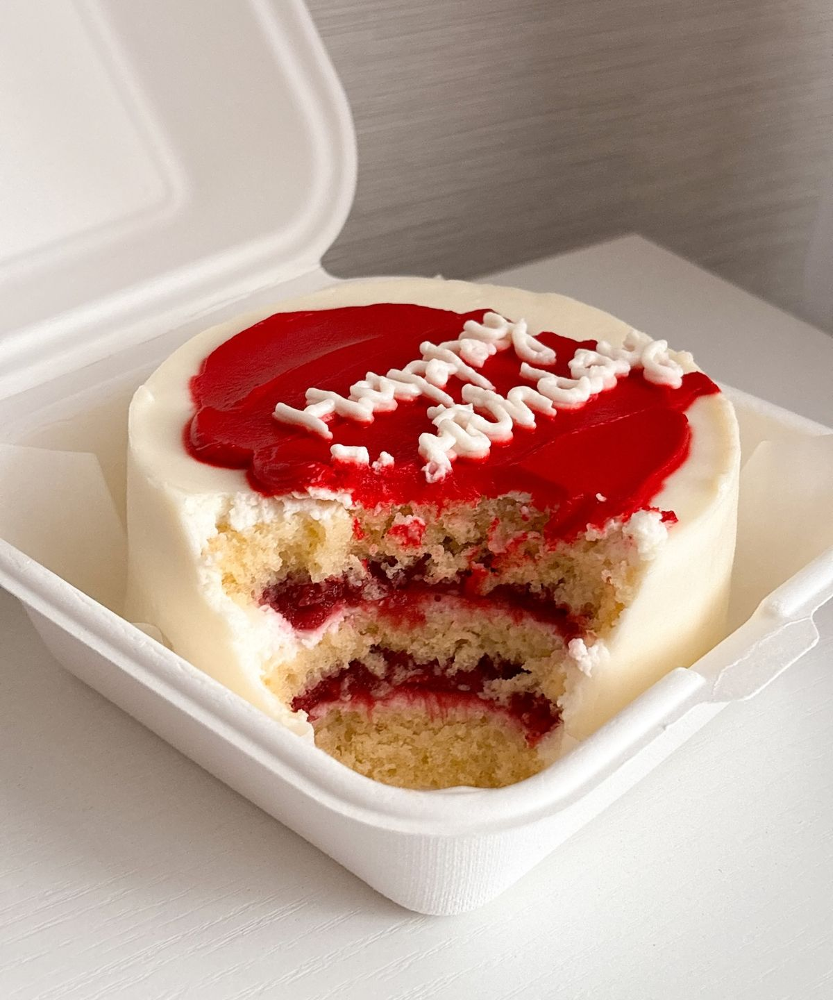
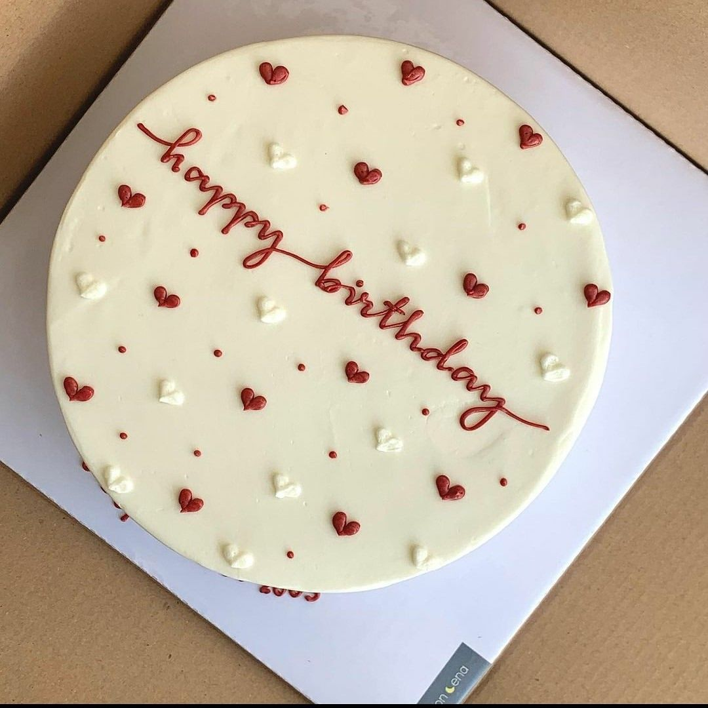
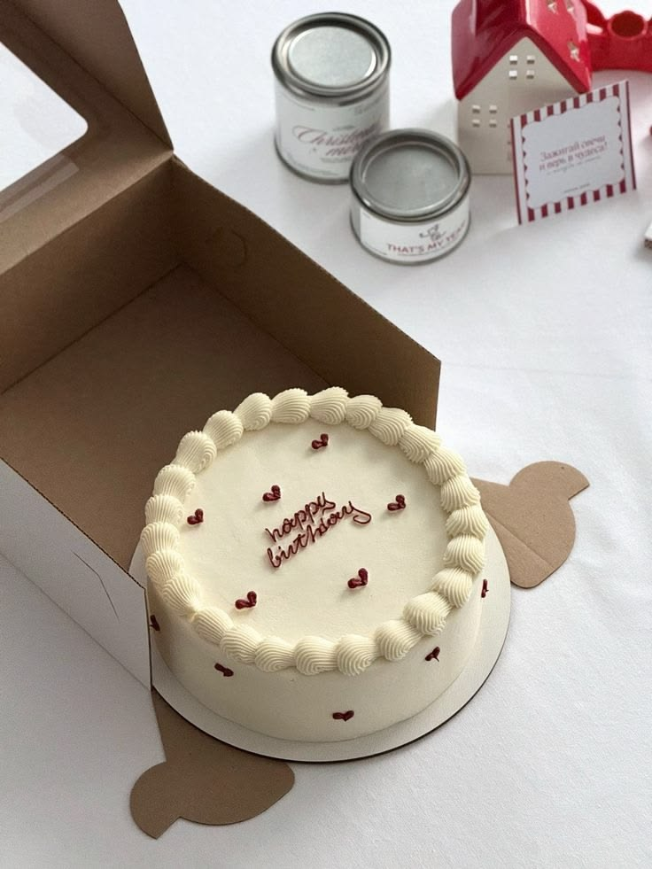
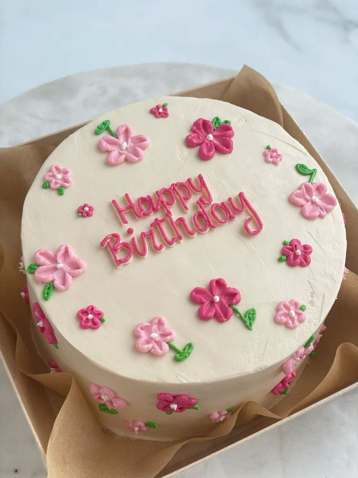
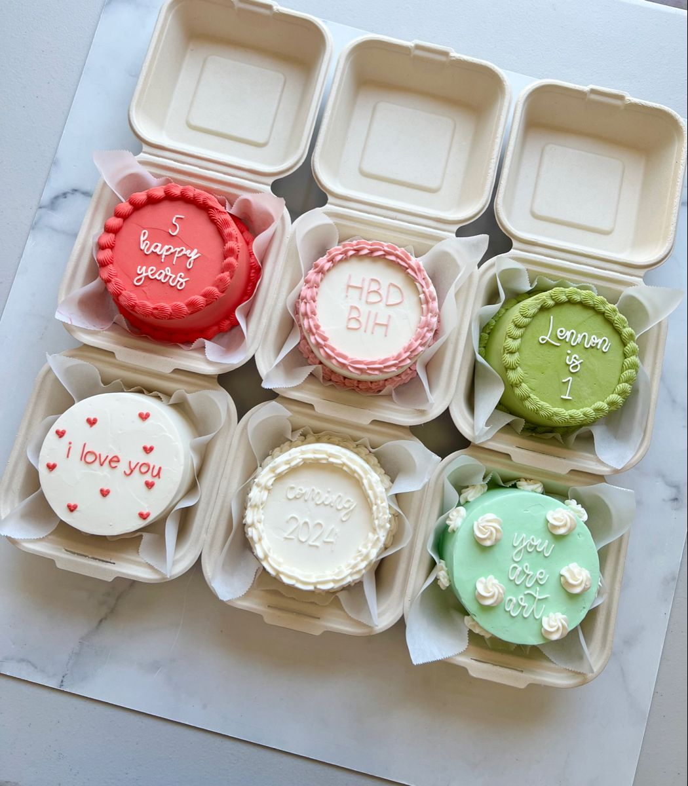

Porciones individuales
♡
✦
Pastelería artesanal · Presentación escolar
Maison Steff
Pasteles artesanales individuales
para cada momento especial.
“Cada pastel es una pequeña obra de dulzura hecha con amor para ti.”
fresco
delicado
especial
Ingredientes frescos
Detalles para regalar
01 · Identidad de marca
Una marca dulce,
Una marca dulce,
delicada y cercana.
Maison Steff convierte un pequeño pastel en un detalle que se recuerda.
Una identidad artesanal inspirada en la suavidad, el cariño y las celebraciones.
Pastel Individual
Artesanal
Nombre de la marca
Maison Steff
#F786C2
#FFD7E1
#FFF2F2
#6A4A3D
#D99CAB
MaisonInspiración elegante
SteffInspiración manuscrita
En esta versión local se usan tipografías seguras del sistema.
La esencia
Artesanal en la elaboración. Elegante en la presentación. Cercana en la atención.
02 · El producto
Pequeño en tamaño.
Pequeño en tamaño.
Grande en intención.
Pasteles frescos, prácticos y listos para convertir cualquier momento en celebración.

01
Fresa
Suave, fresca y alegre, con detalles rosados.
Pastel artesanal individual, fresco y delicado.
02
Vainilla
Un sabor clásico con acabado elegante.
Pastel artesanal individual, fresco y delicado.
03
Chocolate
Intenso, cremoso y perfecto para consentirse.
Pastel artesanal individual, fresco y delicado.
04
Mixto
Una combinación especial de sabores y texturas.
Pastel artesanal individual, fresco y delicado.- Elaboración artesanal
- Ingredientes frescos y de calidad
- Porciones individuales
- Variedad de sabores
- Presentación delicada
- Hecho con amor

- Bandeja individual sin caja
- Cinta rosa por fuera con moño
- Sticker del logo encima
- Presentación lista para regalar
Sabor:
Fecha:
Hecho con amor
Se coloca dentro de la tapa para una presentación más limpia y elegante.
Diseño y desarrollo
Del concepto al primer bocado
Selección de sabores, pruebas de receta, elección de ingredientes, definición del tamaño y diseño de decoración. El objetivo: superar las expectativas del cliente.
03 · Oportunidad de mercado
Un antojo cotidiano.
Un antojo cotidiano.
Una oportunidad real.
Necesidad
Las personas buscan postres individuales, prácticos y atractivos para disfrutar, regalar o celebrar sin comprar un pastel grande.
Oferta
Maison Steff ofrece pasteles artesanales individuales con presentación delicada, ingredientes de calidad y sabores que enamoran.
Demanda
Los consumidores desean postres frescos, ricos y visualmente bonitos, adaptados a sus necesidades y antojos.
Mercado
Personas de todas las edades que disfrutan los dulces, buscan detalles especiales o apoyan emprendimientos locales.
♙
Estudiantes
y jóvenes
⌂
Familias
♡
Detalles
especiales
✦
Eventos y
celebraciones
Tamaño del mercado
Es amplio: los postres se consumen diariamente y en ocasiones especiales. El inicio es local, con posibilidad de expansión.
Estructura y competencia
Existe competencia monopolística. Maison Steff se diferencia de pastelerías y emprendimientos por su sabor, presentación, calidad artesanal y atención personalizada.
04 · Estrategia y crecimiento
Hacer que el amor
Hacer que el amor
también se note.
Posicionar Maison Steff como una marca artesanal, dulce y confiable, reconocida por cada detalle.
Único y delicado
Pasteles artesanales individuales con sabores únicos y presentación especial.
Accesible y justo
Acorde al tamaño, la calidad y los costos de producción.
Directo y cercano
Venta directa, pedidos por redes sociales y entrega a domicilio.
Visual y memorable
Fotografías atractivas, promociones, redes y recomendaciones.
Canales de distribución
Cerca del cliente,
Cerca del cliente,
desde el primer mensaje.
@
Redes sociales
◌
Pedidos por WhatsApp
⌂
Entrega a domicilio
□
Ventas por encargo
Ciclo de vida del producto
Innovar mantiene viva la preferencia del cliente.
- 01Introducción
Lanzamiento y reconocimiento de marca.
- 02Crecimiento
Aumento de ventas y preferencia.
- 03Madurez
Posicionamiento y fidelización.
- 04Declive
Disminución si no se mejora.
05 · Estudio administrativo
Crecer con propósito
Crecer con propósito
y organización.
Maison Steff combina creatividad artesanal con calidad, atención cercana y una visión clara de crecimiento local.
Una experiencia dulce y especial.
Elaborar pasteles artesanales individuales con ingredientes de calidad, hechos con amor, creatividad y dedicación.
Ser una marca reconocida.
Destacar por la calidad, creatividad y sabor, logrando la preferencia de los clientes y creciendo en el mercado local.
Calidad en cada detalle.
Mantener productos frescos, altos estándares de higiene y una atención amable y personalizada.
Valores de Maison Steff
La receta detrás de la marca
- Responsabilidad
- Creatividad
- Honestidad
- Calidad
- Compromiso
- Higiene
- Amabilidad
Estrategia de crecimiento
Promoción en redes sociales, innovación constante en sabores y decoración, empaques atractivos y atención personalizada.
06 · Investigación y contacto
Escuchar, probar
Escuchar, probar
y mejorar.
La investigación ayuda a convertir una buena idea en un producto que el mercado realmente desea.
?
Conocer
Aplicar encuestas, entrevistas y observación directa.
⌕
Analizar
Observar competencia, tendencias y comentarios en redes.
✓
Validar
Escuchar sugerencias y evaluar sabores y presentaciones.
↗
Mejorar
Ajustar el producto antes de lanzarlo a mayor escala.
♥
Prueba de mercado
Degustar para decidir
Realizar encuestas y degustaciones permite conocer los sabores favoritos, medir la aceptación y mejorar antes de crecer.
Maison Steff · Presentación final
Una pequeña obra
Una pequeña obra
de dulzura.
Pasteles artesanales individuales creados para celebrar, regalar y disfrutar con una presentación que transmite amor.
“En Maison Steff, cada pastel es una pequeña obra de dulzura hecha con amor para ti.”
01
Artesanal
02
Delicado
03
Memorable